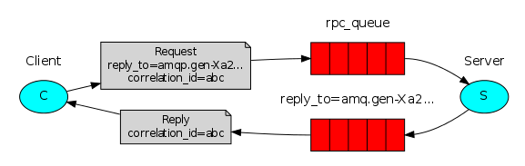

利用RabbitMQ实现远程服务调用
在之前的文章中，我们讲解了多种方式进行消息分发（任务分配）。
在本文中，我们将会讲解如何利用RabbitMQ来实现远程服务调用。
什么是远程服务调用
在之前的文章中，我们讲解了多种方式进行消息分发（任务分配）。
那么远程服务调用与消息分发有什么区别呢？

以上图为例，在远程服务调用中，客户端发送一条消息到服务端，服务端处理完成后，会把结果再返回给客户端。 而对于消息分发而言，则只是存在第一步，即将消息分发给节点处理，但是不需要接收节点返回的结果。
在本文中，我们将会实例来实现一个基于RabbitMQ的远程服务调用。客户端可以输入一个数字到服务端，服务端会计算它的Fibonacci结果并返回客户端。
如何实现远程服务调用
简单来说，远程服务调用的功能就是客户端发送一条消息至服务端，服务端处理完成后，再发送一条消息到客户端。
为了能够让服务端处理完成后将消息发回给客户端，在客户端发送消息时，需要指明回调接收消息的队列，示例如下：
result = channel.queue_declare(exclusive=True)
callback_queue = result.method.queue
channel.basic_publish(
exchange='',
routing_key='rpc_queue',
properties=pika.BasicProperties(
reply_to = callback_queue,
),
body=request
)
Ps：在发送消息时，我们设置了一个参数properties。该参数表示了消息的相关属性，可选属性包括：
| 属性 | 功能说明 |
|---|---|
| delivery_mode | 传输模式，例如2表示持久保存。 |
| content_type | 传输类型，例如application/json |
| reply_to | 指定接收回调的队列。 |
| correlation_id | 用于将远程调用的响应与请求关联起来。 |
下面，我们来详细说明correlation_id是如何将远程调用的响应与请求关联起来的。
在上面介绍的方法中，我们如果为每个远程调用请求创建一个回调队列，那这实际上是非常低效的。
一个推荐的方式是为每个客户端创建一个回调队列。
但是这引发了一个新问题，在该队列中收到回复后，不清楚回复属于具体哪个请求。
为了解决这个问题，我们使用correlation_id属性。
我们将把它设置为每个请求对应的一个唯一值。当我们在回调队列中收到消息时，我们会查看此属性，并基于此属性，我们将能够将响应与请求进行匹配。
如果我们看到一个未知的correlation_id值，我们客户忽略该消息，因为该消息并不属于我们请求的信息。
总结一下，整理的流程如下：
- 当客户端启动时，它创建一个匿名队列用于接收回调消息。
- 对于RPC请求，客户端将发送具有两个属性的消息：reply_to和correlation_id，其中reply_to表示该消息的回调队列、correlation_id为每个请求的唯一值。
- 该请求被发送到服务端接收队列。
- RPC worker（Server）获取队列中的请求。当队列中存在请求时，它执行该任务，并根据reply_to字段将消息返回给指定队列。
- 客户端在回调队列中等待数据。当出现消息时，它会检查correlation_id属性。如果它匹配自己之前发出请求的correlation_id值，则返回对应用程序的响应。
具体实现
服务端：rpc_server.py：
#!/usr/bin/env python
# -*- coding: UTF-8 -*-
import pika
connection = pika.BlockingConnection(pika.ConnectionParameters(host='localhost'))
# 初始化服务端消息接收队列
channel = connection.channel()
channel.queue_declare(queue='rpc_queue')
def fib(n):
# 定义fib实现
if n == 0:
return 0
elif n == 1:
return 1
else:
return fib(n-1) + fib(n-2)
# 接收到消息的处理函数
def on_request(ch, method, props, body):
n = int(body)
print(" [.] fib(%s)" % n)
# 调用函数进行计算
response = fib(n)
# 将计算得到的结果发送回客户端队列
ch.basic_publish(
exchange='',
routing_key=props.reply_to,
properties=pika.BasicProperties(correlation_id = props.correlation_id),
body=str(response)
)
ch.basic_ack(delivery_tag = method.delivery_tag)
# 设置最多仅同时处理1条消息
channel.basic_qos(prefetch_count=1)
channel.basic_consume(on_request, queue='rpc_queue')
print(" [x] Awaiting RPC requests")
# 启动服务
channel.start_consuming()
客户端：rpc_client.py:
#!/usr/bin/env python
# -*- coding: UTF-8 -*-
import pika
import uuid
class FibonacciRpcClient(object):
# RPC请求客户端类
def __init__(self):
# 初始化过程
self.connection = pika.BlockingConnection(pika.ConnectionParameters(host='localhost'))
# 创建一个队列
self.channel = self.connection.channel()
result = self.channel.queue_declare(exclusive=True)
self.callback_queue = result.method.queue
# 针对每个响应执行的'on_response'回调函数，判断是否为自己的消息的回复消息
self.channel.basic_consume(self.on_response, no_ack=True,
queue=self.callback_queue)
def on_response(self, ch, method, props, body):
# 当correlation_id属性匹配自己之前发出请求的correlation_id值，记录响应值
if self.corr_id == props.correlation_id:
self.response = body
def call(self, n):
# 向服务端发起一个调用
self.response = None
# 随机初始化一个corr_id
self.corr_id = str(uuid.uuid4())
# 向服务端队列发送一条消息
self.channel.basic_publish(
exchange='',
routing_key='rpc_queue',
properties=pika.BasicProperties(
reply_to = self.callback_queue,
correlation_id = self.corr_id,
),
body=str(n)
)
# 循环等待接收到response
while self.response is None:
self.connection.process_data_events()
return int(self.response)
# 实例化FibonacciRpcClient
fibonacci_rpc = FibonacciRpcClient()
print(" [x] Requesting fib(30)")
# 发送数字30至服务端
response = fibonacci_rpc.call(30)
# 接收到服务端响应后打印出来
print(" [.] Got %r" % response)
测试一下吧~